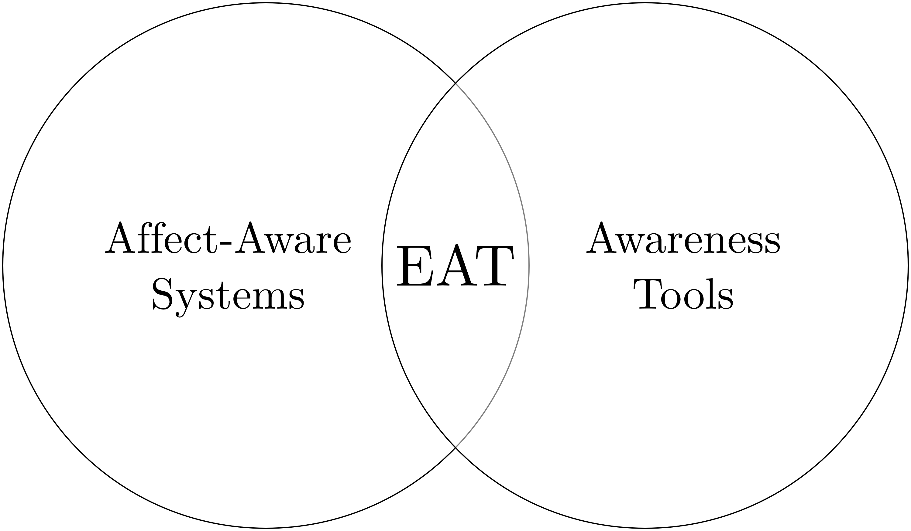

Implementation and Assessment of a Multipurpose Appraisal-Driven
Emotion Awareness Tool Based on Self-Report
With an Application to Computer-Mediated Learning
Environments
Mattia A. Fritz
TECFA, Université de Genève
The rise of affectivism
[...] given the undeniable impact of affective sciences on our
models of brain, mind, and behaviour, it seems relevant to ask today
whether we are now in the era of affectivism.
— Dukes et al., 2021
In the Learning Sciences
-
The effects of learning on affect
D'Mello, 2013; Pekrun & Linnenbrink-Garcia, 2014; Reis et al., 2018 -
The effects of affect on learning
D’Mello et al., 2014; Harley et al., 2017; Rowe & Fitness, 2018; Ruiz et al., 2016 -
Socio-affective competences in learning
Brackett et al., 2019; Järvelä et al., 2016; Miller & Hadwin, 2015
Computer-Mediated Learning

Lack of para-verbal cues, which are normally available in
face-to-face interactions.

ICT
to capture, store, process, and/or visualize affect-related
information.
Endow computer-mediated learning environments with affect-related
information
beyond face-to-face.
Buder, 2011; Cernea & Kerren, 2015; Harley et al., 2017; Janssen
& Bodemer, 2013; Van Kleef, 2017
Affect-related awareness

Stem from affective computing
Reactive or proactive intelligence
Tailor-made to ad hoc environments
Reactive or proactive intelligence
Tailor-made to ad hoc environments
Stem from
CMC and
CSCL
Bestow learners the locus of control
Knowledge, social, and affective information
Bestow learners the locus of control
Knowledge, social, and affective information
Thesis intertwined objectives
Iterative design to implement and assess an EAT to
-
Increase construct validity of Emotional Awareness
Theoretical: What is it? How can it be best conveyed? -
Provide a multipurpose, open-science oriented tool
HCI: How can researchers and practitioners adapt a core tool to their multiple needs? -
Investigate factors determining use and perception
Empirical: Why and under which conditions learners may take advantage of an EAT?
Emotional awareness
Information about one’s own emotions and/or the emotions of
colleagues, which is instrumental to the learning task at hand
— Fritz, 2023
-
Benefits at the intra-personal level
High-level cognitive function, self-regulation of learning, ... -
Benefits at the inter-personal level
Emotion As Social Information, co-regulation/social regulation of learning, ... -
Strategic signal encoding/decoding
Functionally equivalent hypothesis, graphical representation of emotions, ...
Functional abstract model

Numbers represent clusters of potential intervening factors (a)
intrinsic to the EAT; derived by the interactions between (b)
learner-EAT; (c) learner-learner; (d) learner-instructional
design.
Thesis overall hypothesis
Emotional awareness functions are best carried out if EAT
-
Is based on voluntary self-report
Self-report may encourage students to interpret, reflect on, extrapolate and construe meaning from emotion (Boehner et al., 2007; Fontaine et al., 2013; Lavoué et al., 2020) -
Implements an appraisal-driven structure of emotion
Cognitive evaluation may foster assessment of causes and consequences of behavior and guide strategic signaling for emotion communication (Sander, 2013; Scherer, 2007, 2019, 2022) -
Allows moment-to-moment expression and perception
Emotions are dynamic and context-dependent phenomena, which may be better suited in an awareness rather than scripting learning-design (Buder et al., 2022; Miller & Hadwin, 2015)
Appraisal-driven emotion

The dynamic architecture of the component process model. Adapted,
with minor labeling and graphical modifications, from the original
Figure 2.1.1 in Scherer (2010), p. 50.
Thank you for your attention !
Presentation created with
Reveal.js.